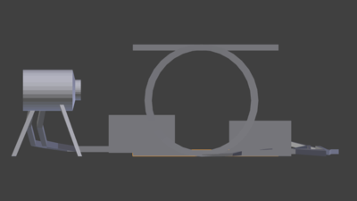
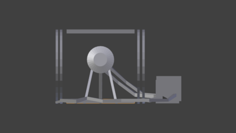
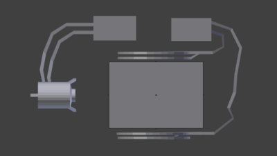
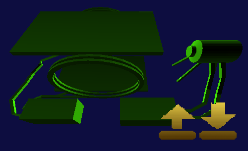
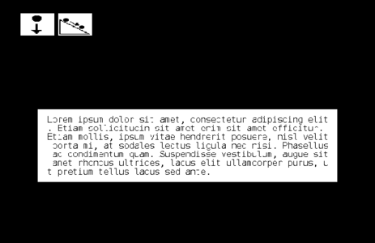
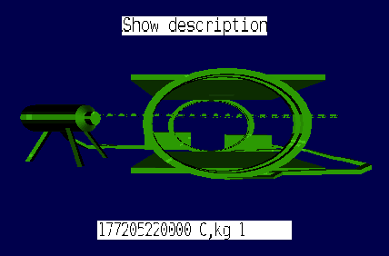
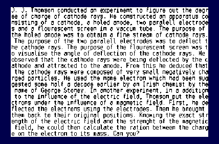

I will create a 3D simulation, or analogue of J. J. Thomson's experiment to measure the ratio of the charge on the electron to its mass. I intend to challenge myself by making use of 3d models, lighting and wrapping text.
I will need to:
I want to:
I'll begin on the 1st of febuary 2021 and finish on the 7th of febuary.
On day one, I researched J. J. Thomson's experiment. I dedicated one hour of the evening to go through 6 pages of a pdf, while making flashcards. The "hardest part" was the equation for the magnetic flux between helmholtz coils. It just took a while to find and initially, I thought there were uncertainty because I thought I saw two equations, but I had actually seen the same equation written in different ways.
Most of the other stuff is on the physics course e.g. magnetic flux density, current, voltage. The formula for the speed of an electron coming out of an electron gun is just an application of the law of conservation of energy.
Thomson's experiments
Looks like it's already been done, but you gotta persevere - for science
Maxwell's equations
Helmholtz coils
On the evening of day two, I downloaded 'Beginning Blender' by Lance Flavell. I read up to chapter three, so I covered the basic controls of blender, basic modeling and a bit of sculpting. The sculpting was fun, but I didn't actually use it when making the model apparatus. The notes that I took were in the form of flash cards.
Beginning Blender by Lance Flavell
On day three, I made the model apparatus. The first thing I made was the electron gun. At first, I used three cylinders as feet, but I later converted to feet to extrusions, making use of the mirror tool so that I wouldn't have to do the same work twice. Then I made the paralell electodes, which was a pretty easy job. The blocks that the wires are connected to are supposed to be power supplies. I decided to make my own coils, rather than using the default torus, as the torus was too thick.
  
On this day, I also made the model loader. First of all, I had to think about whether to roll my own .obj loader or use a premade one. I decided on the latter, but I may make my own one down the line, if it appeals to me. The premade .obj loading library I chose was 'tobj'. The code was pretty easy to grasp, which was nice. I'm starting to believe even complex pieces of software like web browsers shouldn't be too hard to understand, once you know the basics. It's actually in the interest of all open source code maintainers to write clean, readable code, as otherwise, who's going to contribute?
I had an engine already, and I already had a section for loading models, though it was unimplemented. I didn't really want to load .obj files in the engine, so I decided to make an intermediate program to convert .obj files into the format that my vertex arrays are in, that is, positions first, normals second and texture coordinates last. I had some problems getting it working, though I'm not sure which one was the biggest problem. How? Well, I kept on changing the code, and it remained broken, until eventually I fixed a version of the codebase that was fairly distant from the original botched program. I was using "windows" to split the array of vectors when I shoudl have been using "chunks". (See the rust standard library documentation for an explanation). I knew something was fishy when my version of the quad model had 12 vertices!
Anyway, after getting that done, I just had to do some minor things in blender to get the model upright in the game engine. Here's the result.

Note that this isn't the final result. I just used an earlier project as a template.
On day four, I implemented text wrapping. I had already implemented an algorithm for rendering a sequence of characters horizontaly given a bounding box that goes something like this:
This algorithm ould be replicated for rendering rows of text, but first I had to implement those rows. I already had a Text class, so I added a variable called "maximum_rows". This variable would determine the number of rows in the bounding box. A zero value would represent no row limit, i.e the first algorithm would be used.
The new algorithm looks like this:

Again, I added this to an earlier project as I had not yet started writing code for the simulation yet.
On day five, I wrote the state machine for the simulation. To be honest, the simulation isn't that complex. It has two states.
In the main state, the program will draw the apparatus, the voltages and a button to show the description of the experiment. The main state also has a substate, in which the electrons will be drawn. The second state renders the description of the experiment and the apparatus. One can return back to the main state by pressing the escape key.
Due to the simplicity of the states involved, I didn't see it as worth it to use my StateManager class. I would just some booleans rather than full blown classes and a state manager.
I decided to continue on a bit ahead of schedule and write the code for the simulation. The first thing I did was write the boilerplate code for my engine. It's only one line, but it's hard to remember the type signatures. I was about to use the way of loading resources that I had at the time, which entailed loading each resource on a separate line, but I found this too cumbersome. I already had a resource file format that was used in the costructor for my resource manager, so I just had to refactor it so that it was available to the user.
Then I just had to load all the named resource handles in from the resource manager, and I could start rendering.
Porting the equations into code was pretty straightforwards. The only hard part was dealing with how rust forces you to be explicit about alot of conversions. I still don't anticipate compile errors when I try to multiply 2 and 2.0... C and C++ will convert the 2 for you.
With all this done, I had the minimum viable product.
 
I used blender to make a 3D model of the apparatus.
I showed the path of the electrons and I animeted them moving aswell. I did this as I thought I would, using equations in 's' and 't'.
I implemented wrapping text. I used the wrapping text feature to add a description of the experiment, making it educational.
I made the project interactive, by alloing the user to use the 'm' and 'c' keys to change the magnetic voltage and the electorode p.d respectively.
I initially wanted to use bezier curves for the wires, but I couldn't figure out how to turn a curve into a mesh so I just extruded a square. The electron gun should be grounded, as the electrons should have zero potential at the anode.
I still rely too much on brute forcing the compiler to catch my errors. If I started debugging the model loader with basic shapes, I could have saved alot of time.
I could have used a binary intermediate format rather than a text based one.
I could have rendered all that text to a framebuffer. Just having it on the screen drives my cpu usage up to 86%... I actually did try to use a framebuffer, but I couldn't initialize the opengl frambuffer correctly, so I just gave up. This was around day 6 and 7 so I'd already finished the minimum viable product.
In addition to that, I think that if the dimentions of a font are powers of two, the font is easy to resize. It was nigh impossible to get some of the text to be clear without maximising the window, taking a screenshot with imagemagick, and resizing it with mogrify. That's why one of the above images are blury, and the rest of them look crisp but crap.
There's no fancy stuff on this page as I wrote it in markdown rather than html. I might just use html next time.